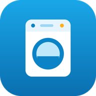
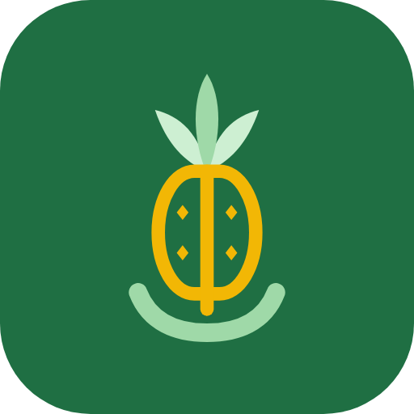

Pilih salah satu demo di bawah. Semua data contoh dibuat di browser Anda sendiri, jadi bebas dicoba: buat order, bayar, cetak nota, ubah warna tema.

Kasir laundry
admin / admin123 atau kasir1 / kasir123
Kasir toko · Support UMKM
admin / admin123 atau kasir1 / kasir123XAMPP di komputer toko, hosting online, atau APK Android yang berjalan tanpa server.
Di dalam demo, tekan "Simulasi: putuskan server" lalu tetap lakukan transaksi.
Menu akun (kanan atas) → Reset data demo untuk mengembalikan data contoh.